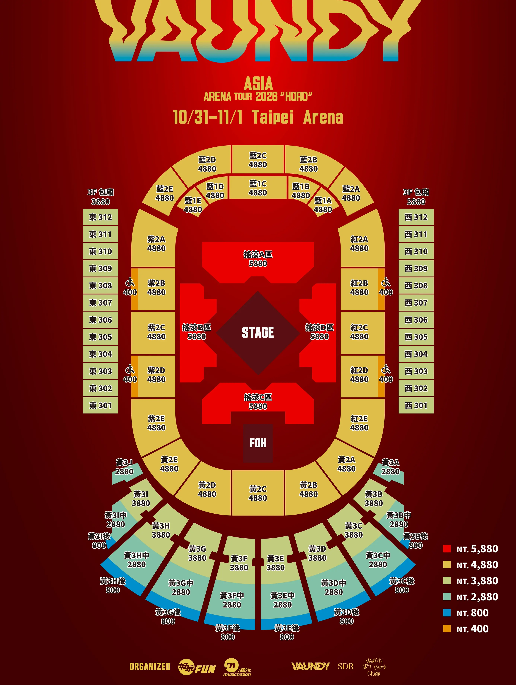

VAUNDY“HORO”
- 演出名稱
- Vaundy ASIA ARENA TOUR 2026 “HORO” IN TAIPEI
- 日期／時間
- 2026.10.31（六）19:00 ／ 11.01（日）19:00 兩天皆 17:30 開場・時間以官方公告為準
- 地點
- 台北小巨蛋 Taipei Arena 105037 臺北市松山區南京東路4段2號
- 入場規則
- 全場實名制 入場請攜帶票券及填寫的有效證件正本；外籍觀眾依售票平台規定攜帶護照正本
- 票價
-
NT$ 5,880 NT$ 4,880 NT$ 3,880 NT$ 2,880 NT$ 800
另收購票手續費 - 取票方式
- 依 Ticket Plus 遠大售票平台提供 實名制資料請務必填寫正確，入場規定以售票平台公告為準
- 購票
- Ticket Plus 遠大售票 票務、實名制與入場問題請依售票平台最新公告確認
| 項目 | 10/31（六） | 11/1（日） | 備註 |
|---|---|---|---|
| 開場／入場 | 17:30 | 17:30 | 官方已公布 |
| 正式演出 | 19:00 | 19:00 | 官方已公布 |
| 周邊／物品寄放 | 待公告 | 待公告 | 請以主辦與場館公告為準 |
| 演出結束 | 預計 21:00 左右 | 預計 21:00 左右 | 實際時間以現場為準 |
※ 目前官方已確認開場與開演時間；周邊販售、物品寄放與入場動線公布後會再補上。
※ 最新資訊請以主辦單位、Ticket Plus 與台北小巨蛋公告為準。
台北場的場館地圖、MD、身分確認等官方公告會在公布後補上。
台北場官方公告圖片尚未公布，請先以主辦與場館公告為準。
※ 台北場官方公告圖片公布後再更新。
台北場最新官方舞台／座位配置圖：

點擊圖片後才會載入壓縮原圖，可開啟原尺寸查看。
圖中票價與票區依主辦單位公布的配置圖整理；實際座位、入場動線與現場安排仍以票券及演出當日公告為準。
※ 若主辦單位後續更新舞台、票區或票價，請以最新官方公告為準。
演出日場館周邊預計人潮與車流較多，請優先搭乘大眾運輸並預留入場時間。
捷運 最推薦
- 搭乘台北捷運松山新店線至 G17 台北小巨蛋站，從 2 號出口出站即達。
- 從其他捷運路線前往時，請先轉乘至松山新店線；出發前可用台北捷運官方網站確認路線與營運資訊。
公車
- 可搜尋站名「臺北小巨蛋」或「捷運台北小巨蛋站」。
- 公車路線、到站時間與演出日改道資訊，請以臺北市公車動態資訊及現場公告為準。
開車／停車
- 活動日周邊車流與停車需求高，建議不要把開車作為首選。
- 若需開車，請先查看台北小巨蛋官方停車與交通公告；場館車位有限，停車不等於保證入場。
- 散場時請依工作人員與交通管制指示離場，避免在場館周邊久候。
※ 地圖 App 需要網路連線。
※ 出口、交通管制、停車與臨時接駁若有變更，均以台北小巨蛋、台北捷運及主辦官方公告為準。
不知道應援口號也沒關係。應援不是義務。這份指南整理的是「知道後會更有趣的事」，不是必須背熟的作業。安靜站著欣賞也很棒。
第一次參加 知道這些就足夠
- 不用全部跟著做。只要在熟悉的歌曲、熟悉的段落一起應援，就能玩得很開心
- 不會日文也沒關係・大合唱多半是「Hu Hu」、「DA-DA-DA」這類聲音，記住發音就可以
- 本指南的動作全部都是徒手完成，不需要另外準備應援物品
- 晚一拍跟著周圍的人做也完全不奇怪
- 場館內網路訊號可能不穩。請在家先開啟一次這個頁面・歌詞會儲存在手機裡，沒有網路也能查看
一起遵守 為了大家的觀賞體驗
- 禁止拍攝・錄音・錄影。若有允許拍攝的段落，現場會另行通知
- 演出中請調低手機螢幕亮度。昏暗觀眾席中的亮螢幕，後方觀眾會看得非常清楚
- 請避免使用手機閃光燈。舞台演出連燈光完全熄滅的瞬間都經過設計，觀眾席的一道光可能破壞那個畫面 若有全場一起舉燈的安排，演出中會另行通知
- 安靜歌曲・原聲樂段請克制口號與歡呼，很多人是來聽歌的
- 把手大幅揮過頭頂時，請留意左右與後方觀眾的視線
- 演出中的交談與歌曲解說，請留到曲目結束後再分享
- 高帽子・蓬鬆髮型可能遮擋後方觀眾視線
- 在人潮密集的空間裡，氣味強烈的香水可能讓他人感到不適
如果是站席
- 不要往前推。後方推擠的力量會直接累積到前排
- 大包包請放進行李寄放處・放在腳邊可能導致跌倒
- 如果周圍有人跌倒，請不要推擠，停下來扶起對方
- 入場前先喝水、先上洗手間，因為要站立 2 小時
- 若呼吸急促或頭暈，請不要勉強，告知附近的工作人員
※ 本指南由粉絲製作。拍攝、攜入、再次入場等官方規定，以 Ticket Plus、台北小巨蛋公告與演出當天現場指示為準。
VAWS MEMBERS 的「公演別原創票卡」為巡演場館限定企劃；台北場攤位位置、開放時間與領取方式目前尚待官方公告。
- 台北場
- 台北小巨蛋 Taipei Arena 2026.10.31（六）・11.01（日）
- 對象
- VAWS MEMBERS 會員 是否可於演出當日新加入、兌換地點與流程，請等待官方公告
- 攤位資訊
- 待官方公布 其他場次的攤位位置與營運時間不適用於台北場
- 官方公布後，請依公告中的 QR 碼與兌換流程辦理。
- 攤位時間與數量可能依準備狀況、天氣及現場人流調整。
- 開場前後預計人潮較多，請預留時間。
※ 以上內容以 VAWS MEMBERS 官方公告為準，詳細安排可能依演出當天現場狀況調整。